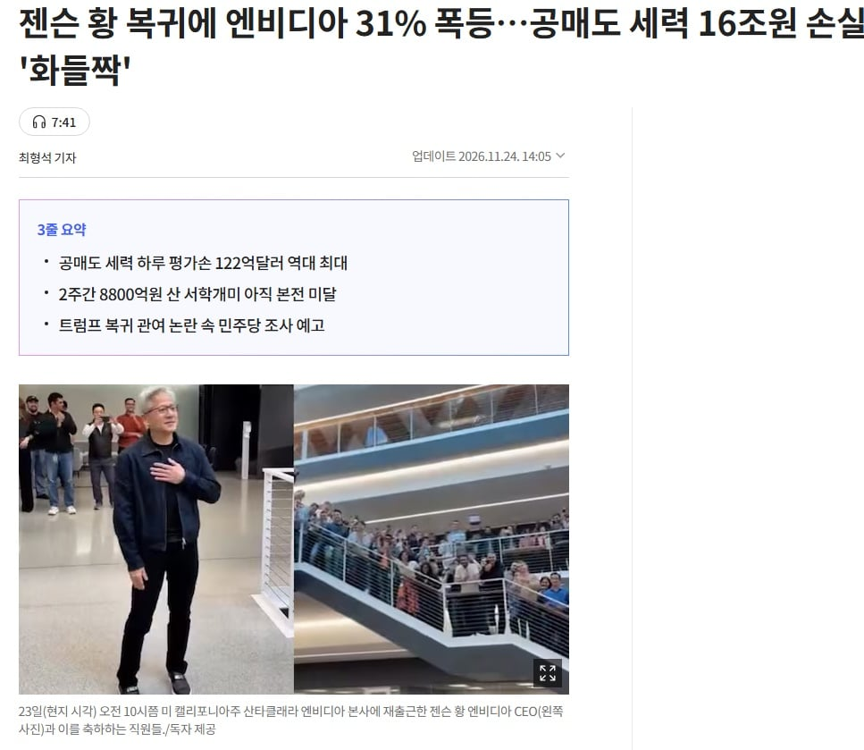

아무리 그래도 불륜을 한두번도 아니고 수도 없이 했는데 책임지고 물러나야 하는거 아니냐?
vs
젠슨황이 불륜을 하든 말든 어쩔... 주식만 떡상한다면 젠슨황이 불륜을 하든 말든 아무 상관없다

아무리 그래도 불륜을 한두번도 아니고 수도 없이 했는데 책임지고 물러나야 하는거 아니냐?
vs
젠슨황이 불륜을 하든 말든 어쩔... 주식만 떡상한다면 젠슨황이 불륜을 하든 말든 아무 상관없다
이런 여론들보면 우리나라는 걍 일정 이상의 정치인, 기업인들은 천룡인으로 명명하고 특혜와 처벌면제를 주는게 옳은거 같음....땅값 올려준다고 공약하면 뽑아주던 8090년대에서 딱 세대만 바뀌고 마인드는 그대로임.
불륜했는데 무슨처벌해야함? 인기먹고사는 연예인이나 정치인도 아니고
우리나라만큼 정치인 기업인들한데 도덕적으로 엄격한 잣대 들이미는 나라가 있나?
오히려 서양이 방탕하게 살아도 능력있으면 수용하는건 더 심할텐데
미국에서 삼성 제일모직 합병같은 일이 벌어지면 어떻게 되것눙...탈세도 승계도 주식증여도 반도체 노동자 사건도 한국에서 얼마나 관대히 처리됬노....
그건 불법의 영역이기도 하고
그런식으로 사람죽거나 문제가 돼도 미국이라고 뭐 다를까 적당히 징벌적 손해배상이나하겠지
막말로 삼성 반도체 노동자보다 아마존에서 과로로 사망한 사람이 더 많을걸
불륜이 불법이냐고
단순 불륜이 아니니까 사임한거임
다른건 몰라도 기술집약 산업은 과하게 표현하자면 유능하면 히틀러 스탈린이라도 데려다 써야하는거 아닌가 싶음…
물론 젠슨황이 아무리 실수를 했다고 해도, 히틀러급이 아니기도 하고(이렇게 길게 표현 안하면 1차원적으로만 알아듣고 지랄하는 놈들이 있기 때문)
경영이랑 불륜이랑 딱히 상관관계가 있나?
부자가 지 좆 맘대로 쓸수도있지 너무 도덕적 무결을 원하는거아님? 그냥 일론머스크의 길을 같이간다고보면 될듯. 아시아인이라고 너무 유교탈레반 시선으로 보는듯
백날 투표해봐라ㅋㅋ
복귀에 찬성하는 쪽이긴한데 투표 사족이 ㅈ같네 ㅋㅋ
내가 ENTJ라 그런가
저 양반 불륜이랑 회사랑 무슨상관관계라고 ㅋㅋ
이미지로 먹고사는 연예인도 아니고
물론 ceo 이미지가 중요하긴 해도
결과적으로 일잘하는 난봉꾼 느낌인데 되려 사업가들 입장에선 이쪽이 이미지 훨 좋던데
뭔 국가 수장을 범죄자를 세우겠단것도아니고
쟤 어차피 장사꾼인데 장사꾼이랑 불륜이랑 뭔상관이여
단순 불륜이 아님. 그냥 불륜만 문제였으면 사임안했어.
한국으로 바꾸면 불륜상대가 북한 스파이 의심에 북한으로 수십조원 물품이 3자회사 통해서 전달됨.
알고 있던 사실인데 간과했네 ㅠ
병신같은 소리 했네 내가
차라리 문제가 되는건 간첩여부지 불륜은...
앞글에선 왜 사족단다고 뭐라하나싶었는데 좀 작작해라 니가무슨 개드립여론 주도하는 기분느끼고싶은거임??
해고했다가 다시복귀시켜라
그걸ㅋㅋㅋㅋ 우리갘ㅋㅋㅋ결정해서 뭐하냐고 ㅋㅋㅋㅋㅋㅋㅋ
여기서 투표해서 뭐해 ㅋㅋㅋㅋㅋ
지가 뭐라도 되는지 아나
정치꾼도 아니고 뭐 기업인이 기업일만 잘하면 되지